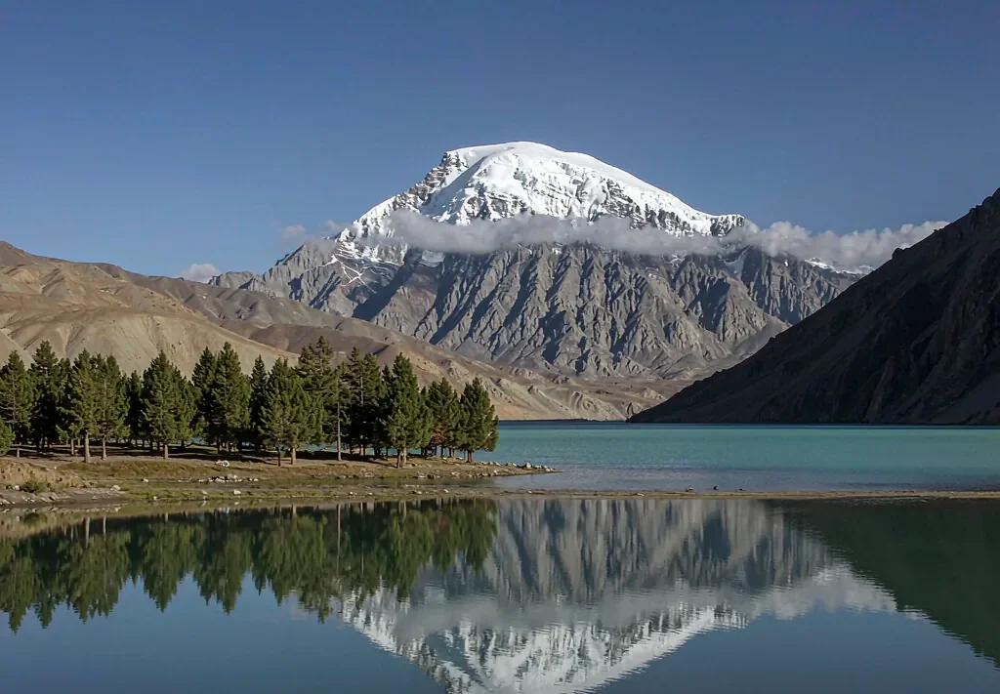

01–02
國際段與中轉 → 烏魯木齊
範例走法為兩段銜接航班，落地後先入住調整時差與作息。

17 days · Grand northern loop
從沙漠公路到雪山湖泊，從伊犁草原到火洲古城。17 天不趕的理由，是留了三個整日停留。

At a glance
新疆的距離會吃掉時間。想把阿勒泰、伊犁、獨庫與吐魯番放在同一趟裡，又不想每天只在車上看風景，17 天是我們實測後最舒服的下限。
這份行程有三個不移動的整日：禾木、那拉提與吐魯番。長距離日之後一定接一個慢日，讓身體與相機都來得及。
建議 6 至 10 月；9 月下旬至 10 月初是北疆金秋，獨庫與伊昭公路僅在開放期排入。
Day by day
里程與時數為實際執行紀錄的參考值；航班與日期會隨年度班表調整。
範例走法為兩段銜接航班，落地後先入住調整時差與作息。
第一天就是長路，穿越古爾班通古特沙漠邊緣直抵額爾齊斯河。
進山，午後在湖區與三灣慢走，夜宿禾木。
晨霧、白樺林、圖瓦人家訪，這天不趕路。
下山轉往克拉瑪依方向，傍晚看雅丹地貌的斜光。
長距離移動日，抵達湖邊正好趕上日落。
環湖晨光後越過果子溝，午後進伊寧老城。
季節性山路，草原與雪山同框；若封路則改走特克斯。
沿伊犁河谷東行，午後抵達空中草原。
草原深度停留，可加騎馬或河谷散步。
走獨庫北段翻天山，從草原一路下降到峽谷。
補看峽谷後回首府，留出採買與休息時間。
東行進入火洲，避開正午烈日，傍晚逛老城。
交河故城、坎兒井、葡萄溝，依體感溫度調整順序。
返回首府，整理行李與戰利品。
中轉航班銜接，專車送機。
Good to know
範例以兩段中轉航班進出烏魯木齊，去回各留一整天緩衝，避免國際段延誤壓縮到行程。中轉城市與班號每年不同，我們會依你的出發地重新查班表。
最長的是第 7 天烏爾禾至賽里木湖約 538 公里、6.5 小時；第 3 天沙漠公路約 530–600 公里。其餘多在 150–280 公里之間。長日之後都安排了慢日或近程日。
FAQ
約四天超過 5 小時，其餘多在 2–4 小時或以步行為主。長途日後都接了慢日，不會連著累。
可以，但動線要重排。告訴我們入境城市，我們會重新算里程與住宿點。
北疆通常在 9 月下旬至 10 月初，逐年會因氣溫提前或延後一週左右；出發前我們會用當年花況與葉況回報。
能。清真、素食、忌口與禮拜時間，出發前先確認，沿途餐廳與休息點會一併安排。